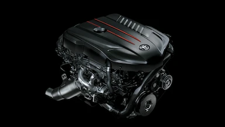
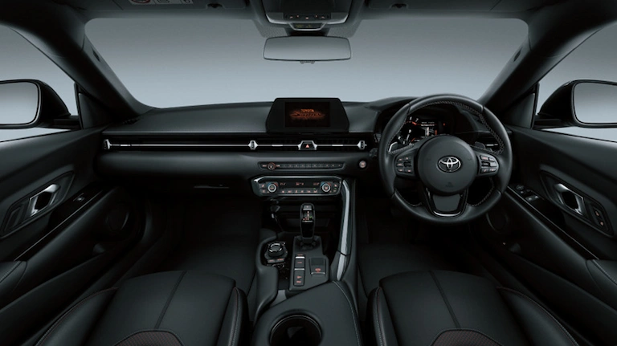

<div class="row">
	<div class="leftcolum">
		<div class="card">
<h2>INTERIOR TOYOTA SUPRA<h2><br>
				<h3>SPERIOR ENGINE<h3>
				<h5>Toyota Supra ditenagai oleh mesin superior yang memberikan performa luar biasa. Tentu saja juga responsif sehingga memberikan pengalaman berkendara yang memuaskan.<h5>
				
            <br>
			<h3>SPORTY DASHBOARD</h3>
			<h5>Nuansa sporty pada Dashboard langsung terliahat dari desain dashboard dengan lekukan yg unik dan sporty.</h5>
			
			<br>
			<h3>SPORTY STEERING WHEEL</h3>
			<h5>Menggunakan bahan leather,dilengkapi dengan Audio & MID Switch,dan Convenient paddle shift yang memberikan Anda opsi mengemudi yang Sporty.</h5>
			
			<br>
			<h3>SPORTY CONSOLE</h3>
			<h5>Konsol pada Toyota Supra tersebut dari carbon fiber,menawarkan tampilan yang seporty dan juga moderen,terutama pada tuas transmisinya.</h5>
			
			<br>
			<h3>PROGRESSIVE MID AND COMBINATION METER</h3>
			<h5>Sporty progressive combination meter with MID untuk menampilkan berbagai informasi penting mengenai mobil dan perjalanan auto family.</h5>
			